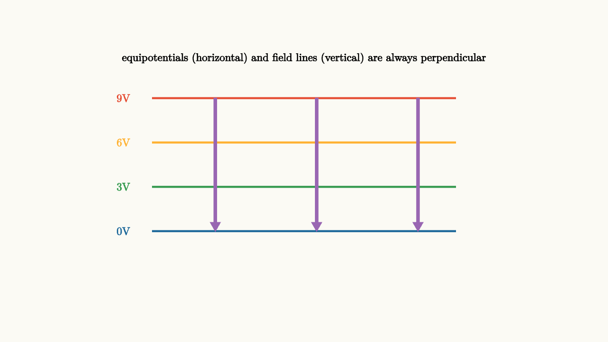

Voltage Is Energy Per Charge
Imagine you're planning a hike across a mountain range. You could describe the terrain by the slope at every point: at this location, the ground rises steeply to the northeast. But that's an enormous amount of information, and it's hard to work with. Most hikers use a different description: a topographic map, where contour lines connect points of equal elevation.
From the elevation map, you can immediately read off the slope - it's steepest where the contour lines are closely spaced, and the direction of steepest ascent is perpendicular to the contours. The elevation map contains all the same information as the slope-at-every-point description, but packaged in a form that's far more intuitive.
Electric potential, which we call voltage, is the elevation map of electricity. The electric field tells you the force-per-charge at every point. Voltage tells you the energy-per-charge at every point. And just as a hiker cares more about elevation differences than about exact altitudes, what usually matters in circuits and fields is voltage differences.
The Work Done by the Electric Field
Carry a positive test charge slowly from point A to point B through an electric field. The field pushes the charge around, doing work on it. How much work depends on the path, right?
Actually, no. For electric fields produced by stationary charges, the work done by the field depends only on the starting and ending points. It doesn't matter which route you take between A and B - the work is always the same. This makes the electric field conservative, in the technical sense of that word.
This property is worth sitting with. It means you can assign a well-defined potential energy to each point in space. If you know the electric potential energy at every point, you know everything about the work the field will do on any charge moving between any two points.
Define the electric potential (voltage) at a point as the electric potential energy per unit charge:
The units are joules per coulomb, which get their own name: volts. One volt means one joule of energy per coulomb of charge.
The potential difference between two points is:
The minus sign is crucial. Moving a positive charge from low potential to high potential requires you to do work against the field, so the charge gains potential energy. Moving it from high to low releases energy. A positive charge released from rest accelerates from high to low potential.
The Topographic Map Analogy in Detail
The electric field and voltage are two descriptions of the same situation, related by the gradient:
In one dimension, this just says $E = -dV/dx$: the electric field is the negative slope of the voltage. The field points in the direction of decreasing voltage, just as water flows downhill.
This gives you two ways to think about any electrostatic situation. You can draw field vectors showing the force-per-charge at each point, or you can draw equipotential surfaces (or lines in 2D) showing where the voltage is constant. These two pictures are always perpendicular to each other.
Field lines always cross equipotentials at right angles. Here's why: along an equipotential, $\Delta V = 0$, which means the field does no work on a charge moving along the equipotential, which means the field has no component along the equipotential, which means the field is perpendicular to the equipotential.

source
background = [0.985, 0.98, 0.955, 1]
camera = Camera(4.8b)
mesh landscape = block {
. stroke{RED, 2.5} Line(start: [-2.4, 1.15, 0], end: [2.4, 1.15, 0])
. stroke{ORANGE, 2.5} Line(start: [-2.4, 0.45, 0], end: [2.4, 0.45, 0])
. stroke{GREEN, 2.5} Line(start: [-2.4, -0.25, 0], end: [2.4, -0.25, 0])
. stroke{BLUE, 2.5} Line(start: [-2.4, -0.95, 0], end: [2.4, -0.95, 0])
. color{PURPLE} Arrow(start: [-1.4, 1.15, 0], end: [-1.4, -0.95, 0])
. color{PURPLE} Arrow(start: [0.2, 1.15, 0], end: [0.2, -0.95, 0])
. color{PURPLE} Arrow(start: [1.8, 1.15, 0], end: [1.8, -0.95, 0])
. center{[-2.85, 1.15, 0]} color{RED} Text("9V", 0.62)
. center{[-2.85, 0.45, 0]} color{ORANGE} Text("6V", 0.62)
. center{[-2.85, -0.25, 0]} color{GREEN} Text("3V", 0.62)
. center{[-2.85, -0.95, 0]} color{BLUE} Text("0V", 0.62)
. center{[0, 1.78, 0]} Text("equipotentials (horizontal) and field lines (vertical) are always perpendicular", 0.62)
}
"voltage landscape"
play Fade(0.7)The horizontal lines are equipotentials - every point on a given line has the same voltage. The vertical purple arrows show the electric field direction. They're perpendicular to the equipotentials and point from high voltage to low voltage.
Between parallel plates with voltage difference $\Delta V$ and separation $d$, the field is uniform and the equipotentials are equally spaced planes:
This is the field-as-voltage-slope in its simplest form. A 9 V battery connected to plates 3 cm apart gives a field of 300 V/m. Shrink the gap to 1 mm and the same 9 V produces 9000 V/m. The voltage difference is the same; the steepness of the gradient grows as the spacing shrinks.
Voltage from Point Charges
For a single point charge $Q$, the potential at distance $r$ is:
This is positive for positive charges and negative for negative charges. It falls as $1/r$ rather than $1/r^2$ (one power less than the field, which makes sense because potential is the integral of field along a path).
Far from the charge, the potential approaches zero. Close to a positive charge, the potential is large and positive - you'd need to do a lot of work to drag another positive charge in from far away.
The potential from multiple charges adds as a scalar sum, not a vector sum:
This is enormously simpler than adding the electric fields, which require vector addition. Whenever you need to work with energy rather than force, voltage is your friend because scalars are easier than vectors.
source
param q_sign = 0.3
background = [0.985, 0.98, 0.955, 1]
camera = Camera(4.8b)
let PotentialMap = |s| block {
let col = RED
. fill{alpha{0.22} RED} stroke{RED, 2} center{[0, 0, 0]} Circle(0.22)
. center{[0, 0, 0]} color{RED} Text("+", 0.75)
. stroke{RED, 1.5} center{[0, 0, 0]} Circle(0.55)
. stroke{ORANGE, 1.5} center{[0, 0, 0]} Circle(0.9)
. stroke{GREEN, 1.5} center{[0, 0, 0]} Circle(1.3)
. stroke{BLUE, 1.5} center{[0, 0, 0]} Circle(1.75)
. center{[0.55, -0.12, 0]} color{RED} Text("high V", 0.62)
. center{[1.75, -0.12, 0]} color{BLUE} Text("low V", 0.62)
. center{[0, 2.0, 0]} Text("equipotential circles around a point charge", 0.68)
}
"equipotential rings"
mesh scene = PotentialMap(s: $q_sign)
play Fade(0.7)The concentric circles are equipotentials. They're closely spaced near the charge (steep gradient, strong field) and spread farther apart at larger distances (gentle gradient, weak field). The electric field points radially outward, perpendicular to these circles at every point.
What a Battery Actually Does
A 1.5 V battery maintains a potential difference of 1.5 V between its terminals. Every coulomb of charge that moves from the negative terminal through the battery to the positive terminal receives 1.5 joules of energy from the chemical reactions inside.
The battery is an energy pump. It lifts charge from low potential to high potential, doing work that gets stored as electrical potential energy. When you connect the battery to a circuit, that potential energy drives current around the loop, converting to light, heat, motion, sound - whatever the circuit does.
The voltage across the battery tells you the energy budget per coulomb. It says nothing about how much charge flows - that depends on the resistance of the circuit. But every coulomb that does flow carries 1.5 J of energy to spend.
source
background = [0.985, 0.98, 0.955, 1]
camera = Camera(4.8b)
"battery as energy pump"
mesh battery = block {
. fill{alpha{0.15} GRAY} stroke{GRAY, 3} center{[0, 0, 0]} Rect([0.55, 2.0])
. center{[0, 0.75, 0]} color{RED} Text("+", 0.78)
. center{[0, -0.75, 0]} color{BLUE} Text("-", 0.78)
. center{[0, 1.45, 0]} Text("high V", 0.62)
. center{[0, -1.45, 0]} Text("low V", 0.62)
}
mesh arrow = color{GREEN} Arrow(start: [0, -0.55, 0], end: [0, 0.55, 0])
mesh caption = center{[1.6, 0, 0]} Text("each coulomb gains 1.5 J of energy", 0.62)
play Fade(0.7)
"charge gains energy"
mesh energy_label = center{[0, 2.1, 0]} Text("battery lifts charge in potential", 0.68)
play Fade(0.5)Equipotentials in Practice
The geometry of equipotentials tells you a lot about how fields behave in real situations.
Near a sharp metallic point, the equipotentials bunch together tightly. The voltage changes rapidly over a short distance, which means the electric field there is very strong. This is why lightning rods work, why pointed electrodes can initiate sparks at lower voltages than blunt ones, and why van de Graaff generators have smooth spherical domes rather than pointy shapes.
Near a flat conductor surface, the equipotentials are nearly parallel planes. The field is nearly uniform. This is the geometry of a parallel-plate capacitor.
Between two opposite charges (a dipole), the equipotentials form curves that bulge toward the negative charge. The zero-volt equipotential lies along the symmetry plane midway between the charges.
source
param sep = 1.1
background = [0.985, 0.98, 0.955, 1]
camera = Camera(4.8b)
let DipoleContours = |s| block {
. fill{alpha{0.22} RED} stroke{RED, 2} center{[-s, 0, 0]} Circle(0.18)
. fill{alpha{0.22} BLUE} stroke{BLUE, 2} center{[s, 0, 0]} Circle(0.18)
. center{[-s, 0, 0]} color{RED} Text("+", 0.7)
. center{[s, 0, 0]} color{BLUE} Text("-", 0.7)
. stroke{RED, 1.2} center{[-s, 0, 0]} Circle(0.42)
. stroke{RED, 1.2} center{[-s, 0, 0]} Circle(0.72)
. stroke{BLUE, 1.2} center{[s, 0, 0]} Circle(0.42)
. stroke{BLUE, 1.2} center{[s, 0, 0]} Circle(0.72)
. stroke{GREEN, 1.5} Line(start: [0, -1.4, 0], end: [0, 1.4, 0])
. center{[0.28, 1.55, 0]} color{GREEN} Text("V = 0", 0.62)
. center{[0, -1.72, 0]} Text("zero-volt plane sits between the charges", 0.68)
}
"dipole potential"
mesh scene = DipoleContours(s: $sep)
play Fade(0.7)
"separate charges"
sep = 1.5
scene = DipoleContours(s: $sep)
play Lerp(1.2)Voltage Differences, Not Absolute Values
A subtle but important point: only differences in voltage are physically meaningful, not absolute values. This is the same as saying only differences in elevation matter for a hiker - whether you call sea level "zero meters" or "1000 meters" doesn't change how steep the hike is.
You can freely set the voltage to be zero at any convenient reference point. Common choices include: the negative terminal of a battery (so the positive terminal is at $+V_{\text{battery}}$), the ground in a circuit, the surface of Earth in geophysics problems, or infinity for isolated charge distributions.
This freedom is useful. For a battery circuit, set the negative terminal to zero volts. Then every other voltage in the circuit is measured as an amount above or below ground.
Energy Stored in Electric Fields
When you assemble a collection of charges against their mutual repulsion, you do work. That work gets stored as electrical potential energy in the configuration.
For a system of two charges $q_1$ and $q_2$ separated by distance $r$:
Positive if both charges have the same sign (you had to push them together against repulsion). Negative if they have opposite signs (they'd naturally attract - you had to hold them apart to prevent them from falling together).
For continuous charge distributions, this energy can be written as a volume integral of the electric field itself:
The energy lives in the field. Wherever there's an electric field, there's energy stored in that region of space. The energy density is proportional to the field strength squared. This is one of the most conceptually important results in electromagnetism: fields are not just mathematical tools for tracking forces. They are physical objects that carry energy.
The Gradient Relationship
The connection between field and voltage - that $\vec{E} = -\nabla V$ - is worth making concrete with a simple example.
Between two parallel plates, the field is uniform and horizontal: $E$ points from the positive plate to the negative plate. The voltage decreases linearly from the positive plate to the negative plate. The field is the slope of the voltage profile.
Now consider a point charge. The voltage is $V = kQ/r$. The field is $E = -dV/dr = kQ/r^2$ (the minus sign and the direction work out because voltage decreases as $r$ increases, so the field points outward). The gradient takes you from the scalar map to the vector force.
This gradient relationship means you can always choose which description to use. Working with forces and directions? Use the field. Working with energy and work? Use voltage. They're the same physics, just packaged differently for different questions.
The Lesson
Voltage is energy per charge. It's the elevation map of electrostatics. The field is the gradient of voltage, pointing downhill. Moving charge from high to low voltage releases energy; from low to high requires energy input.
The power of voltage is that it's a scalar - easier to handle than vectors. For energy calculations, for understanding battery-driven circuits, for mapping the territory around charges, voltage is the right language. The field tells you the force at a point. Voltage tells you what moving between any two points will cost or yield.
The equation $\vec{E} = -\nabla V$ ties them together. Learn to read in both languages and you can translate between them freely, choosing whichever makes the problem clearer.